| Column | Simplified | Type | Source | Description | Missing |
|---|---|---|---|---|---|
racf_link_level |
No | VARCHAR | RACF (pipeline link) | How the car was linked to the RACF enriched DfT car fleet: model (same make, DfT generic model, model string, year of first use and fuel group), genmodel (same make, generic model, year and fuel group) or none. Missing for vehicles that are not cars | 19.11% |
racf_smmt_type |
Yes | VARCHAR | RACF (pipeline link) | SMMT segment with the largest fleet among the linked RACF rows | 26.15% |
racf_suv_share |
No | DOUBLE | RACF (pipeline link) | Share of the linked RACF fleet that SMMT calls a crossover / SUV or an off-roader | 26.47% |
racf_eu_exact_share |
No | DOUBLE | RACF (pipeline link) | Share of the linked RACF fleet matched to the EU type-approval data for the exact year | 21.98% |
racf_mass_kg |
Yes | DOUBLE | RACF (pipeline link) | EU mass in running order (kg): fleet-weighted mean over the linked RACF rows with a plausible value. A value for the model, not a measurement of this car | 25.69% |
racf_kerb_weight_kg |
Yes | DOUBLE | RACF (pipeline link) | RDW kerb weight (kg): fleet-weighted mean over the linked RACF rows with a plausible value. A value for the model, not a measurement of this car | 23.01% |
racf_length_mm |
Yes | DOUBLE | RACF (pipeline link) | RDW length (mm): fleet-weighted mean over the linked RACF rows with a plausible value. A value for the model, not a measurement of this car | 49.22% |
racf_width_mm |
Yes | DOUBLE | RACF (pipeline link) | RDW width (mm): fleet-weighted mean over the linked RACF rows with a plausible value. A value for the model, not a measurement of this car | 60.54% |
racf_height_mm |
Yes | DOUBLE | RACF (pipeline link) | RDW height (mm): fleet-weighted mean over the linked RACF rows with a plausible value. A value for the model, not a measurement of this car | 39.83% |
racf_wheelbase_mm |
Yes | DOUBLE | RACF (pipeline link) | Wheelbase (mm): fleet-weighted mean over the linked RACF rows with a plausible value. A value for the model, not a measurement of this car | 28.28% |
racf_footprint_m2 |
Yes | DOUBLE | RACF (pipeline link) | EU footprint, wheelbase x track (m2): fleet-weighted mean over the linked RACF rows with a plausible value. A value for the model, not a measurement of this car | 28.92% |
racf_co2_nedc |
Yes | DOUBLE | RACF (pipeline link) | EU NEDC CO2 (g/km): fleet-weighted mean over the linked RACF rows with a plausible value. A value for the model, not a measurement of this car | 34.61% |
racf_co2_wltp |
Yes | DOUBLE | RACF (pipeline link) | EU WLTP CO2 (g/km): fleet-weighted mean over the linked RACF rows with a plausible value. A value for the model, not a measurement of this car | 85.35% |
racf_e_consumption_wh_km |
Yes | DOUBLE | RACF (pipeline link) | EU energy use (Wh/km): fleet-weighted mean over the linked RACF rows with a plausible value. A value for the model, not a measurement of this car | 91.79% |
racf_e_range_km |
Yes | DOUBLE | RACF (pipeline link) | EU electric range (km): fleet-weighted mean over the linked RACF rows with a plausible value. A value for the model, not a measurement of this car | 94.46% |
28 Car size and model attributes
28.1 Overview
These columns attach to each car the size, mass and official emissions of its model, from the RACF car fleet. That fleet is DfT’s car fleet by make, model, year of first use and fuel, enriched with each model’s SMMT segment (supermini, SUV and so on; Chapter 3) and with its mass, dimensions, CO2, energy use and electric range from the EU type-approval and Dutch RDW registers. It holds counts and model attributes only, not vehicle records.
racf_link_levelsays how the car was linked to the RACF fleet:model: the same make, DfT generic model and model string, year of first use and fuel group;genmodel: failing that, the same make, generic model, year and fuel group, averaging over the generic model’s model strings;none: not linked.
body_typeCars) are linked, so the column and everyracf_column is blank for other vehicles.racf_smmt_typeis the SMMT segment with the largest fleet among the linked RACF rows, andracf_suv_sharethe share of that fleet the SMMT calls a crossover / SUV or an off-roader.- The size and mass columns are the EU mass in running order (
racf_mass_kg), the RDW kerb weight, length, width and height, the wheelbase, and the footprint (wheelbase times track, in m²). - The emissions and energy columns are the EU NEDC and WLTP CO2 figures in g/km, the energy use in Wh/km and the electric range in km.
racf_eu_exact_shareis the share of the linked RACF fleet matched to the EU type-approval data for its exact year. The rest borrows another year’s or fuel’s values.
Each value is the fleet-weighted mean over the linked RACF rows with a plausible value, so it describes the model, not the individual car. How the link is made is set out in the methodology, section 6 and section 9.3.
ImportantModel values, not measurements
A car’s racf_co2_nedc is the average for its model, year and fuel, not its own figure, which is in co2 (Chapter 27). The racf_ columns are best used to describe groups of cars, such as the fleet’s average size or the share of SUVs, and for cars with racf_eu_exact_share well below 1 they are borrowed from another year or fuel.
racf_link_level, racf_suv_share and racf_eu_exact_share are in the maximal table only. The SMMT segment and the size, mass, CO2 and energy columns are also in the simplified table.
28.2 Coverage
racf_link_level is present for the 81% of vehicles that are cars. Most of those link to a model, so racf_smmt_type is present for 74% of all vehicles. The other columns are present only where the linked RACF rows have a plausible value, and their coverage follows the registers they come from (Figure 28.1):
- The EU mass and footprint and the RDW kerb weight are present for most cars:
racf_mass_kgfor 74% of all vehicles. The RDW width and length are present for fewer. - NEDC CO2 applies to cars approved before the WLTP test replaced it, so
racf_co2_nedcis present for most cars first used up to 2020 andracf_co2_wltpfor most of those first used from 2018 (62% of vehicles first used in 2022). Cars first used from 2018 to 2020 often have both. - Energy use and electric range apply only to plug-in cars, so they are present for 5.5% of vehicles, rising for the newest.
| Column | All vehicles | Before 2000 | 2000–09 | 2010–19 | 2020 on |
|---|---|---|---|---|---|
racf_link_level |
80.9% | 81.6% | 82.3% | 81.4% | 76.4% |
racf_smmt_type |
73.9% | 65.7% | 78.1% | 79.9% | 64.5% |
racf_suv_share |
73.5% | 64.8% | 77.9% | 79.7% | 64.4% |
racf_eu_exact_share |
78.0% | 78.5% | 81.5% | 80.5% | 66.5% |
racf_mass_kg |
74.3% | 65.8% | 79.2% | 80.2% | 64.5% |
racf_kerb_weight_kg |
77.0% | 75.8% | 81.1% | 80.3% | 64.7% |
racf_length_mm |
50.8% | 24.1% | 47.3% | 64.6% | 63.3% |
racf_width_mm |
39.5% | 9.7% | 19.2% | 66.6% | 62.3% |
racf_height_mm |
60.2% | 26.5% | 63.6% | 76.6% | 63.4% |
racf_wheelbase_mm |
71.7% | 63.1% | 78.3% | 80.0% | 54.6% |
racf_footprint_m2 |
71.1% | 61.7% | 77.2% | 80.0% | 54.5% |
racf_co2_nedc |
65.4% | 61.0% | 78.8% | 79.9% | 19.3% |
racf_co2_wltp |
14.6% | 0.2% | 0.2% | 16.7% | 54.5% |
racf_e_consumption_wh_km |
8.2% | 0.0% | 0.0% | 8.9% | 31.7% |
racf_e_range_km |
5.5% | 0.1% | 0.1% | 0.2% | 31.8% |
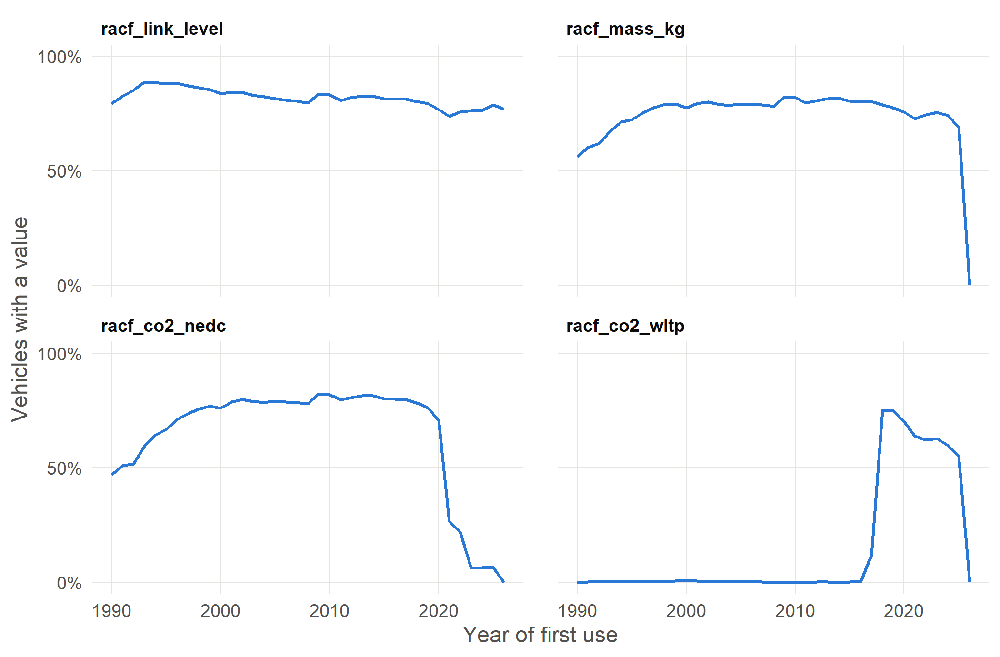
28.3 Values
How the values of each column change over time, by year of first use, from 1990. Numeric columns and dates show the minimum, lower quartile (Q1), median, upper quartile (Q3) and maximum; other columns show the share of vehicles with each value, with the less common values grouped as All other values and missing values as Blank.
racf_link_level
How the car was linked to the RACF enriched DfT car fleet: model (same make, DfT generic model, model string, year of first use and fuel group), genmodel (same make, generic model, year and fuel group) or none. Missing for vehicles that are not cars.
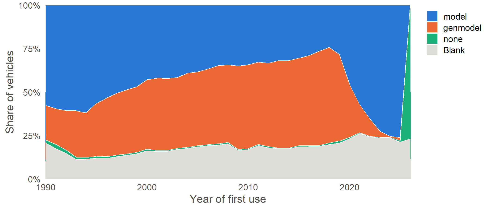
racf_smmt_type
SMMT segment with the largest fleet among the linked RACF rows.
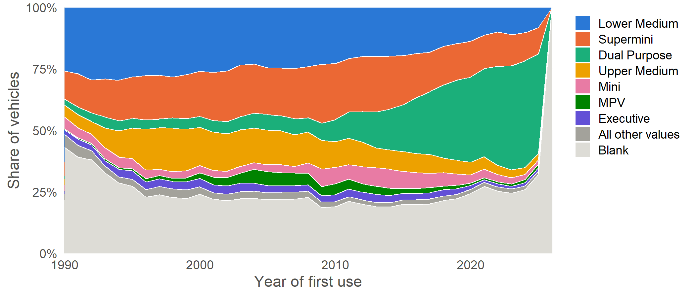
racf_mass_kg
EU mass in running order (kg): fleet-weighted mean over the linked RACF rows with a plausible value. A value for the model, not a measurement of this car.
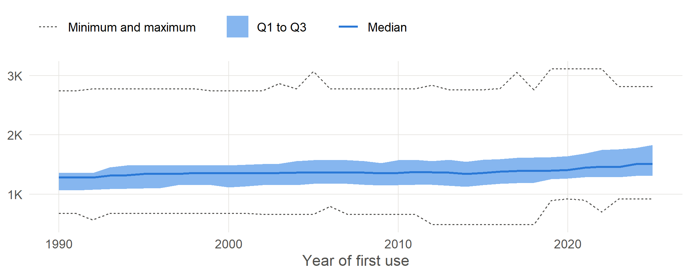
racf_kerb_weight_kg
RDW kerb weight (kg): fleet-weighted mean over the linked RACF rows with a plausible value. A value for the model, not a measurement of this car.
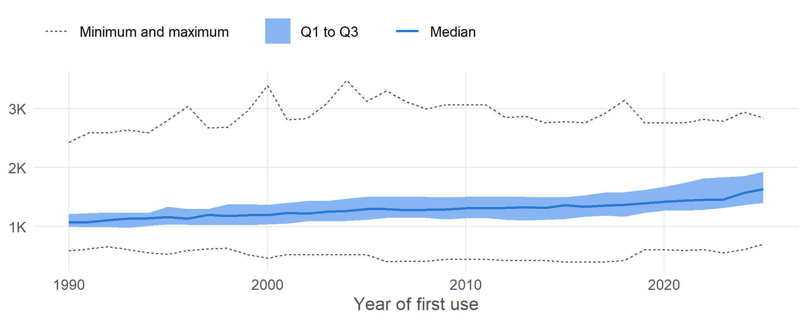
racf_length_mm
RDW length (mm): fleet-weighted mean over the linked RACF rows with a plausible value. A value for the model, not a measurement of this car.
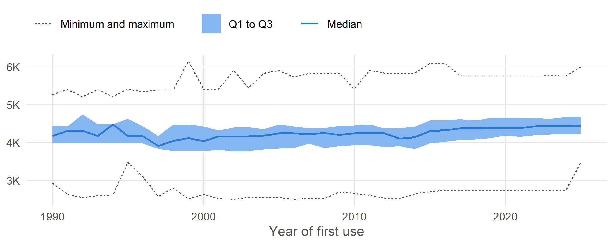
racf_width_mm
RDW width (mm): fleet-weighted mean over the linked RACF rows with a plausible value. A value for the model, not a measurement of this car.
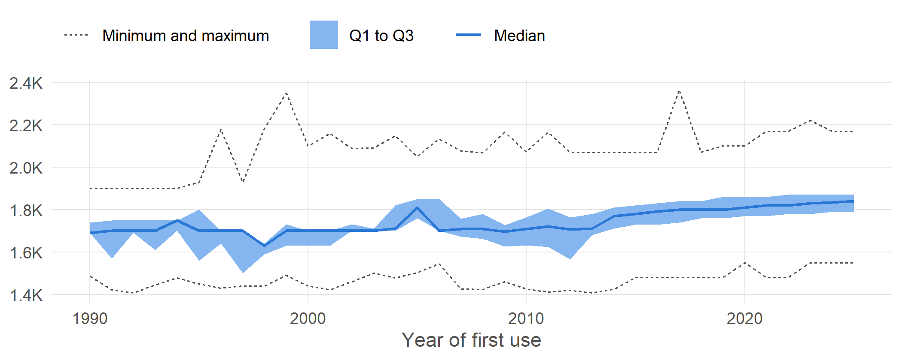
racf_height_mm
RDW height (mm): fleet-weighted mean over the linked RACF rows with a plausible value. A value for the model, not a measurement of this car.
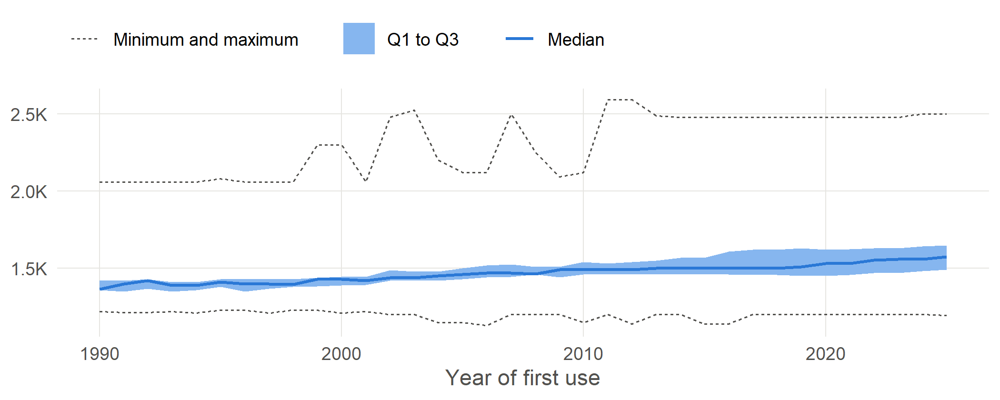
racf_wheelbase_mm
Wheelbase (mm): fleet-weighted mean over the linked RACF rows with a plausible value. A value for the model, not a measurement of this car.
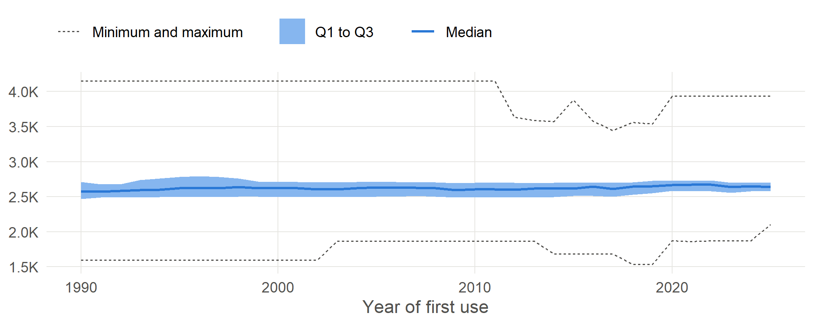
racf_footprint_m2
EU footprint, wheelbase x track (m2): fleet-weighted mean over the linked RACF rows with a plausible value. A value for the model, not a measurement of this car.
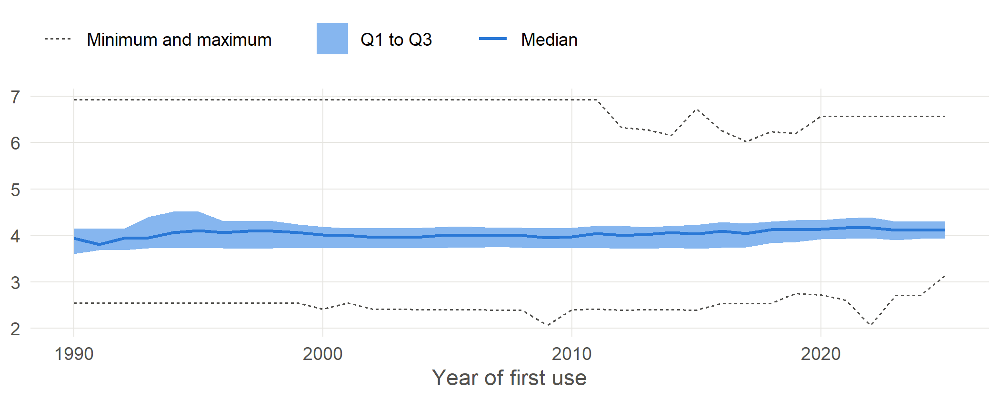
racf_co2_nedc
EU NEDC CO2 (g/km): fleet-weighted mean over the linked RACF rows with a plausible value. A value for the model, not a measurement of this car.
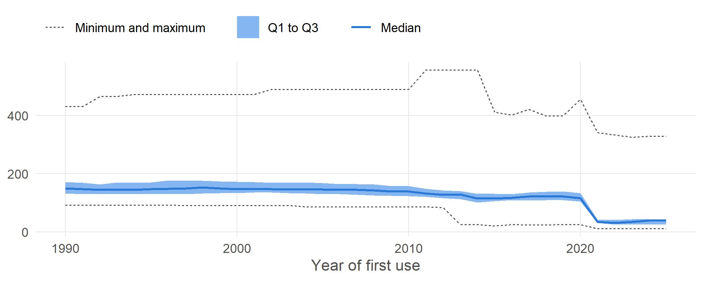
racf_co2_wltp
EU WLTP CO2 (g/km): fleet-weighted mean over the linked RACF rows with a plausible value. A value for the model, not a measurement of this car.
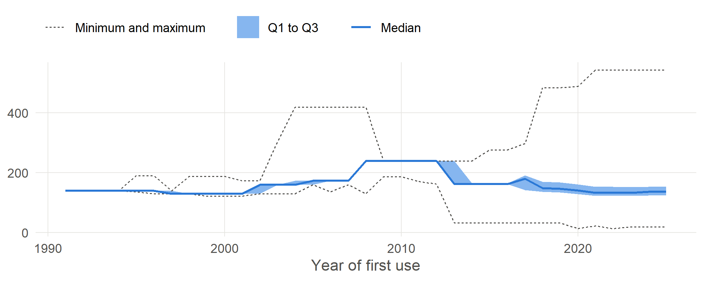
racf_e_consumption_wh_km
EU energy use (Wh/km): fleet-weighted mean over the linked RACF rows with a plausible value. A value for the model, not a measurement of this car.
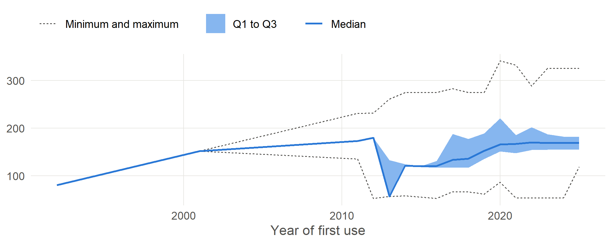
racf_e_range_km
EU electric range (km): fleet-weighted mean over the linked RACF rows with a plausible value. A value for the model, not a measurement of this car.
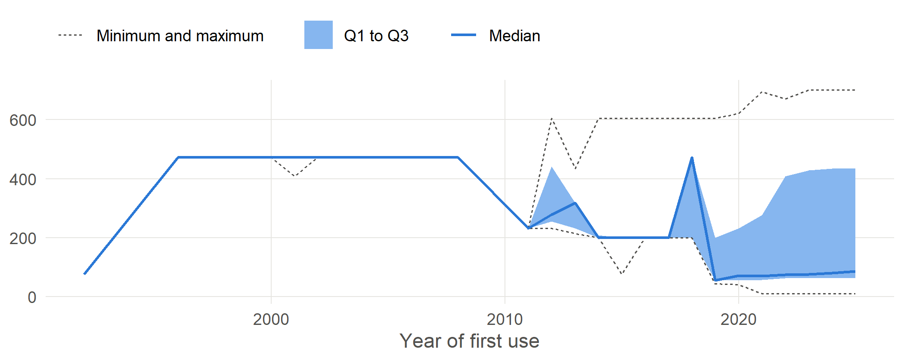